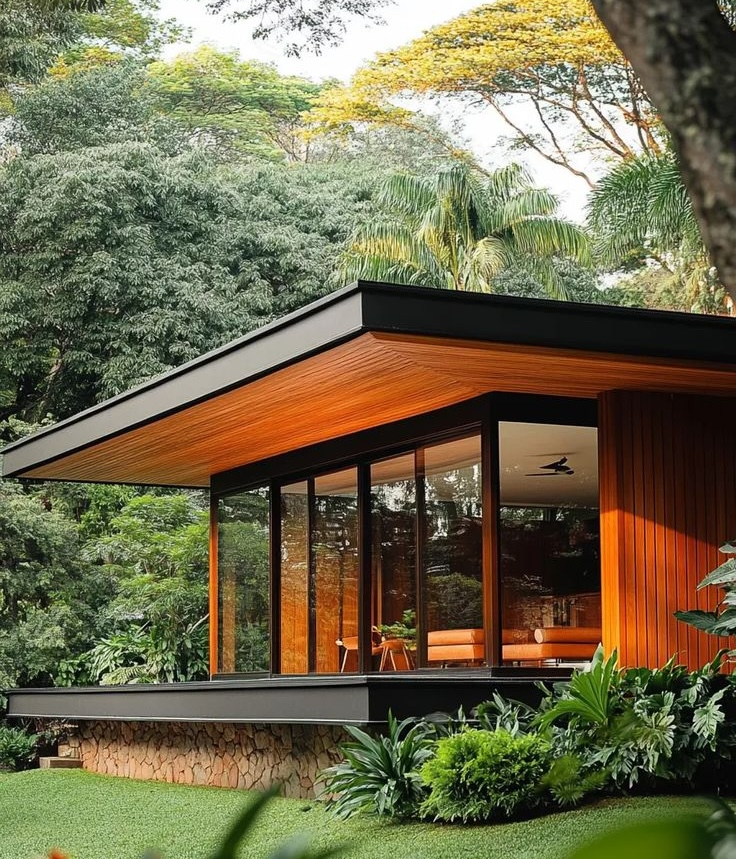
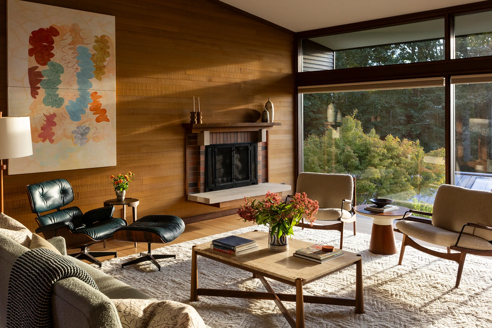
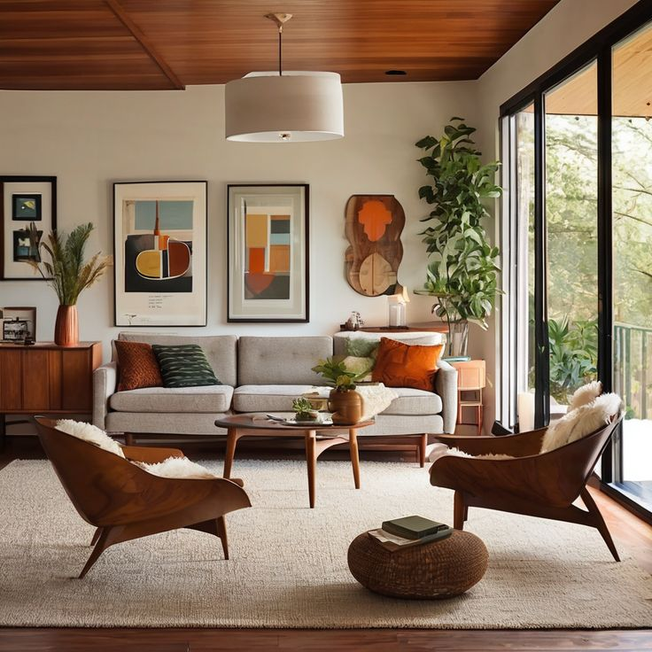

Αρχές Σχεδιασμού
Κάθε έργο του ARCHĒ ανταποκρίνεται σε ένα συγκεκριμένο σύνολο συνθηκών — τόπος, πρόγραμμα, πολιτισμός και φιλοδοξία. Αυτό που τα ενώνει είναι μια κοινή φιλοσοφία: η σαφήνεια, η ισορροπία και ο σκοπός.

01. Πλαίσιο
Η αρχιτεκτονική ξεκινά από τον τόπο. Προσεγγίζουμε κάθε έργο μέσα από την κατανόηση του φυσικού, πολιτισμικού και κοινωνικού του περιβάλλοντος.

02. Σύνθεση
Η σύνθεση δίνει μορφή στην πρόθεση — μέσα από αναλογίες, ρυθμό και υλικότητα, ώστε κάθε χώρος να αποτελεί μέρος ενός συνεκτικού συνόλου.

03. Συναίσθημα
Η αρχιτεκτονική βιώνεται πριν κατανοηθεί. Σχεδιάζουμε χώρους που ενεργοποιούν τις αισθήσεις και δημιουργούν μνήμη.

04. Απόλαυση
Η απόλαυση προκύπτει μέσα από την ακρίβεια — λεπτομέρειες και μεταβάσεις που μετατρέπουν τον χώρο σε εμπειρία.
